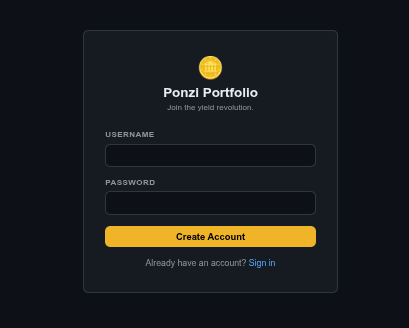
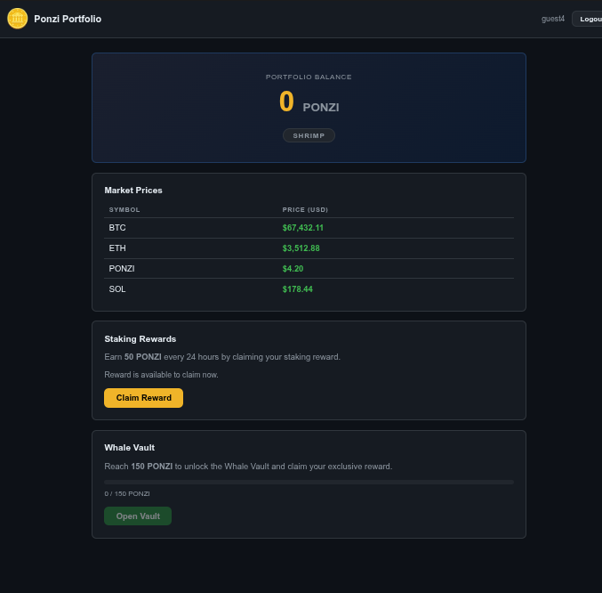

Ponzi set his towel down for one 24-hour reward claim. He came back to find the sunbed had been "claimed" three times over while he wasn't looking.
We're dropped into a crypto rewards web app called Ponzi — a wellness rewards platform running poolside at the resort. The app offers daily reward claims, but users are limited to one claim every 24 hours. Our target is the Whale Vault, which requires multiple claims to access.
The story hints at a classic race condition: "He came back to find the sunbed had been 'claimed' three times over while he wasn't looking." This suggests we can fire off multiple simultaneous claim requests before the server locks us out.
We land at http://10.113.154.86:3000 and create a guest account. The registration is straightforward — no email verification needed.

After logging in, we're redirected to the dashboard where we see our current tier, a "Claim Reward" button, and the dreaded 24-hour countdown timer.

With Burp Suite running and intercept turned ON, we click the "Claim Reward" button on the dashboard. The captured request is beautifully simple:
POST /claim HTTP/1.1 Host: 10.113.154.86:3000 Content-Length: 0 Accept-Language: en-US,en;q=0.9 User-Agent: Mozilla/5.0 (X11; Linux x86_64) AppleWebKit/537.36 Accept: */* Origin: http://10.113.154.86:3000 Referer: http://10.113.154.86:3000/dashboard Cookie: connect.sid=s%3A[your-session-token] Connection: keep-alive
Content-Length: 0 — no CSRF token, no timestamp, no claim counter in the body. The server relies entirely on the session cookie to enforce the 24-hour limit. This is a TOCTOU (Time-of-Check, Time-of-Use) vulnerability waiting to be exploited.
Here's where we pull off the "towel on the sunbed" trick. The server checks if we've claimed in the last 24 hours, but if we fire multiple requests simultaneously, they all pass the check before any of them update the "last claimed" timestamp.
POST /claim request → Send to Repeater┌─────────────────────────────────────────┐ │ Tab 1: POST /claim ──┐ │ │ Tab 2: POST /claim ──┤ │ │ Tab 3: POST /claim ──┼── Send Group │ │ Tab 4: POST /claim ──┤ (parallel) │ │ Tab 5: POST /claim ──┘ │ └─────────────────────────────────────────┘
After the parallel requests succeed, we refresh the dashboard. Our claim count has jumped past the threshold, unlocking access to the Whale Vault. Inside, the flag awaits.
| Issue | Fix |
|---|---|
| TOCTOU Race Condition | Use database-level atomic operations (UPDATE ... WHERE last_claim < NOW() - INTERVAL '24 hours') or pessimistic row locking |
| No CSRF Protection | Implement CSRF tokens on state-changing endpoints |
| No Rate Limiting | Add server-side rate limiting per session/IP |
| Session-only Auth | Pair sessions with request signing for sensitive operations |